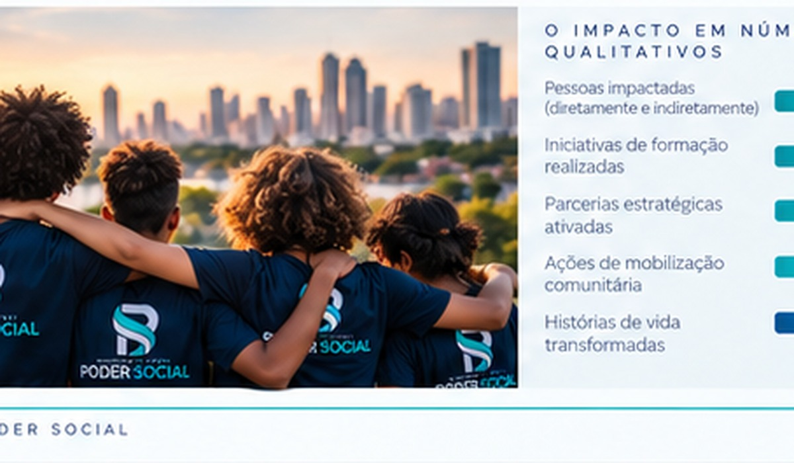

Atuação
Eixos de atuação
Frentes integradas que podem ser adaptadas a políticas, programas, territórios e públicos específicos, sempre com objetivos, entregas e indicadores definidos.
⌂
Educação e Formação
Cidadania, projetos de vida, competências socioemocionais, formação complementar e desenvolvimento de jovens e adultos.
◎
Inclusão e Cidadania
Direitos, equidade, acesso a serviços, convivência, fortalecimento de vínculos e valorização da diversidade.
↗
Empregabilidade e Oportunidades
Qualificação profissional, orientação de carreira, empreendedorismo e conexão com oportunidades.
∞
Desenvolvimento Comunitário
Diagnóstico territorial, mobilização, redes locais, protagonismo comunitário e melhoria das condições de vida.

Método de atuação
Do diagnóstico à avaliação
1
DiagnósticoLevantamento de contexto, público, necessidades, riscos e oportunidades.
2
PlanejamentoObjetivos, metas, cronograma, responsabilidades, orçamento e indicadores.
3
Execução e mobilizaçãoEntregas, comunicação, participação e articulação territorial.
4
Monitoramento e prestação de contasEvidências, resultados, aprendizados e transparência para parceiros e sociedade.